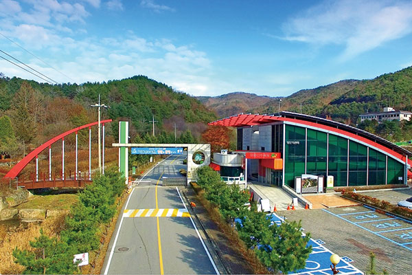
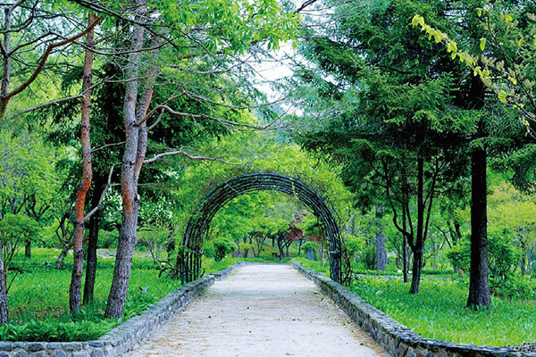
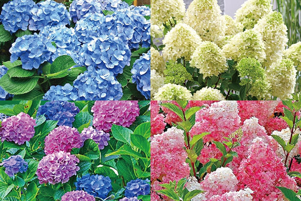
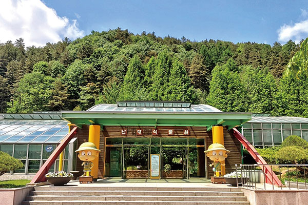
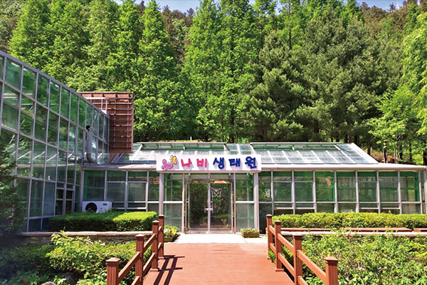

> 미동산수목원 > 수목원 안내도
> 미동산수목원 > 수목원 안내도수목원 안내도
미동산 수목원은 다양하고 유익한 체험과 시설이 있어
친근하고 편안한 산림환경 문화를 선도해 나가는 시설입니다.
- 
- 
- 
- 
- 
-
- 01. 방문자 센터
- 방문하시는 분들을 안내해 드리는 방문센터입니다.
-
- 02. 유전자보존원
- 다양한 식물의 유전자 종 보존을 위하여 조성된 자연 학습장입니다.
-
- 03. 수국당채원
- 다양한 색상의 수국꽃을 감상할 수 있는 테마 정원입니다.
-
- 04. 난대식물원
- 중부지방에서 흔히 볼 수 없는 남부 수종이 주를 이루고 있는 식물원입니다.
-
- 05. 나비생태원
- 살아있는 나비와 나비의 생활사를 학습할 수 있는 생태체험 공간입니다.